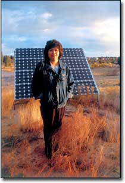
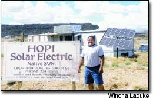
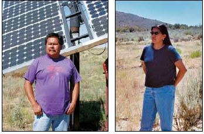
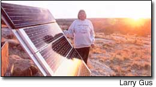
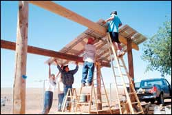

In the sunny Southwest, many Hopi and Navajo people have discovered that solar panels strike the right balance between tradition and technology.
The Hopi village of Old Oraibi is believed to be the longest continuously inhabited village in the United States. A thousand years of history have shaped the Hopi culture, with its many stone houses, corn, melons and ceremonies. On the 1.5 million acres that make up the Hopi Reservation in northeastern Arizona, 8,000 people live in a dozen villages high atop the mesas. They follow teachings about sustainability, and this covenant with Massaw, the Creator: Live respectfully, acknowledge the Cloud People, hold your ceremonies, grow your corn, and your people will see the arrival of the next world.
It is from this village of Oraibi that the other Hopi villages in Arizona sprang - Bacavi, Moenkopi and Kykotsmovi, to name just three. Here, in the center of Hopi tradition, one also can find evidence of a people looking to the future: In Oraibi, and across the reservation, many homes are now outfitted with solar panels, quietly generating renewable energy.
The Solar Business
The United States’ fast pace and tendency toward sudden, dramatic changes is not always a comfortable fit with the Hopi values of resilience and tenacity, yet it has not been possible for the Hopi to remain completely isolated from the rest of American culture. Ironically, many Hopi live without electricity, even though the reservation is surrounded by coal mines and power plants. The Hopi accept change slowly and deliberately, and most readily when the changes are of their own doing. The Hopi word potskwaniat means “Hopi pathway to the future,” and it is a phrase aptly applied to the work of Native Sun, a Hopi solar power business based in Kykotsmovi.
Native Sun is owned in part by Doran Dalton, a man whose lifestyle spans both past and future. Dalton is the former chair of the nonprofit Hopi Foundation, and now runs Native Sun, a small for-profit business that has employed up to eight people for big installation projects. With the support of a group of committed Hopis and friends, more than 800 household-sized solar units have been installed for Hopi and other Native American people in the region.
“We were all working at the Hopi Guidance Center, most of us who founded the Hopi Foundation,” Dalton says, “and we kept seeing the same people.” They would come in for help, and then be back two years later, needing assistance again.
“We started to talk about what was happening at Hopi. Most of our people were unemployed, and we wanted to find some employment for them. And, we wanted to make a difference here,” he says.
Since its founding in 1985, the Hopi Foundation has restored ancient ceremonial houses, offered language and cultural classes, developed a health program with the tribal government and initiated several cottage industries, including Native Sun and Gentle Rain Designs, a clothing company that uses recycled fibers.
In an unusual move for the isolated Hopi community, the foundation even reached beyond the borders of the Hopi Reservation to create a Tucson, Ariz., sanctuary for indigenous refugees from Central America - an expression of traditional Hopi teachings of peace.
Culture and Power
The Hopi Foundation began in order to stave off an impending cultural crisis. “Non-Hopi influences brought onto the reservation were creating problems,” Dalton recalls. “It was basically Hopi trying to find themselves - being torn between the Hopi way of living and the modern way of living, and not being able to reconcile the two.”
Loris Taylor, the foundation’s associate director, says, “We’ve been taught through Western models for a long, long time that the answers come from the outside. When you focus on the deficiencies of people, then the perception is that the people are weak and that they’re unable to do things for their own conditions. Our approach is that the strengths are inherent in communities.”
Many Hopi have resisted electrification of their homes, and one-third of the villages have not allowed electric power lines within their boundaries. This has posed an interesting dilemma. “The Hopi had no objection to electricity itself,” Dalton says. “It was the power lines.”
Debby Tewa, a Hopi solar electrician who has worked on Native Sun and other solar projects in the Southwest, explains: “The traditional Hopis don’t allow power lines into the villages because the utilities will have right of way onto Hopi land. Village leaders think that if we don’t pay the bills, the utilities will take even more land.”
Spiritual issues influence the village leaders, too. According to the Hopi Foundation, the electromagnetic field of electricity that emanates from power lines is considered disruptive to the atmosphere, ambience and balance of ceremonial areas.
The Hopi have tried a number of substitutes for utility-generated electricity. Most Hopi houses are still heated with coal, which the people gather from the ground and the waste piles of the mine site on the reservation.
In the past, people also would “hook up to the battery of their car and hope they didn’t use so much that it wouldn’t start in the morning,” Dalton says. Another solution was using generators, but he notes those had their own complications. “The smell of exhaust was bad, and we would be yelling (over the roar) at the dinner table.” The village of Hotevilla, he adds, was even called “Generator City” at one time.
Solar power provided a more appealing option while maintaining Hopi self-sufficiency. “When you get your own system, it’s yours,” Tewa says. “There’s no power line, and no right of way into the villages.”
Native Sun began operations with money from foundation grants, and a revolving loan program helped community residents purchase solar panels; today, the loan program is administered by a local bank.
The energy company offers an array of photovoltaic systems: two, four or eight panels, stationary or rotating. Most of the options now are in operation somewhere on the reservation.
NonProfit Solar
Similar issues confront members of the Navajo Nation, whose reservation surrounds the Hopi Reservation. The Navajo remain one of the largest populations in the country without electricity; current estimates are that 10,000 to 25,000 Navajo homes lack grid-based power.
But there, too, many people are recognizing the potential of solar energy and working to fill the growing demand for solar panels. Native American Photovoltaics (NAPV), a nonprofit organization that was founded in 1998 by New York architect Gregory Kiss, has constructed 44 solar systems for off-grid homes on the Navajo Reservation near the towns of Winslow and Dilkon. NAPV’s mission is to bring electricity to people who live in rural areas where utility companies are unlikely to ever extend their lines.
NAPV installs PV panels and offers monthly maintenance service. The employees also teach conservation and efficiency. Dave Silversmith, the NAPV project manager, says, “I teach people how to use electricity from the solar panels efficiently, what kinds of appliances they can run and how to conserve electricity.” He also translates solar terminology into Navajo and explains concepts that are still new to people there.
NAPV also helps clients procure financing for solar panels. A Department of Energy grant supported the initial project and early capital costs. Now, the organization is hammering out new arrangements that will help finance future projects.
Initially, test families signed up for a plan that required paying $50 per month for 10 years toward the purchase of their solar-power units (this fee also included repair and maintenance service). Additional grants that permit smaller monthly payments for similar projects that support 20 or 30 systems may be awarded.
Another possible plan that would finance home PV systems and fund a solar panel factory on the Navajo Reservation, where unemployment hovers between 50 and 75 percent, would require a down payment of $1,000 to $2,000 from each of 20,000 potential Navajo subscribers and 10 years of $150 monthly payments from those with average annual incomes of at least $6,000.
A Solar Future
What the Hopi and Navajo have done is common sense for the rest of us as well: Use less, produce what you can on your own, and be cognizant of the implications of each action on others. This is more than a spiritual and cultural decision - it is a necessary economic one as well. Imported fossil fuels are nonrenewable and damaging to the environment.
The push for energy alternatives, self-reliance and efficiency is growing in communities across the country. Today, in the era of energy-utility deregulation, many Native American tribes are considering developing their own utilities, pooling their consumers to secure lower rates, and moving towards alternative energy sources. A 1998 handbook called Native Power, produced at the University of California, Berkeley, has been particularly influential, showcasing alternative energy projects on various reservations and in Native Americans’ homes, and outlining possible energy efficiency and self-reliance measures for tribes.
Back on the mesas of Hopi, solar installer Dalton grabs some equipment and heads out down the dirt road; Native American communities of the region are learning from the Hopi about solar technologies, and Dalton says he hopes Native Sun has helped customers and potential solar entrepreneurs to reconnect to a more ecologically and culturally sustainable way of living. His work at Native Sun exemplifies the vitality of the Hopi culture and its strength in today’s world. The people who survived for a thousand years on the edge of a cliff perhaps have a few lessons for us all.
Winona LaDuke is an enrolled member of the Mississippi Band of the Anishinaabeg tribe, and she lives on the White Earth Reservation in northern Minnesota. She is program director of Honor the Earth, a national foundation that supports environmental initiatives within indigenous communities. In 1996 and 2000, LaDuke was the Green Party’s candidate for U.S. vice president, and she is the author of several books, including All Our Relations.
Although Native Americans are among the poorest in the United States, their lands are home to a wealth of natural resources. Two-thirds of the country’s uranium; one-third of all Western low-sulfur coal, and vast hydroelectric, oil and natural gas resources are all on Native American land. Some of the largest corporations in the world have access to mine these resources through leases overseen by the U.S. Department of the Interior. Too often, Native American communities receive less than the full value of the resources in royalties, and are left with huge slag piles, uranium mill tailings and abandoned uranium mine shafts (more than 1,000 on the Navajo Reservation alone) when mining operations end.
Both the Navajo and Hopi tribes have had disputes with Peabody Energy’s Black Mesa Coal Mine, which spans both reservations and employs members of both tribes. The Navajo Nation took the federal government to court after the Interior Department accepted a lease rate from Peabody worth much less than the market value of the coal. Now, some members of the Hopi tribe are engaged in a battle with Peabody over the company’s use of reservation water resources.
Peabody employs about 15 Hopis, and provides about $7.7 million in annual royalties to the tribe, a huge chunk of the budget for a relatively impoverished tribal treasury. But the company’s coal slurry pipeline to the Mohave Generating Station, some 250 miles away in Laughlin, Nev., annually sucks more than a billion gallons of water from under the Hopi and Navajo Reservations. The fact that the Mohave electric plant helps keep the lights bright in Las Vegas and hair dryers blowing in Los Angeles even as thousands of people on the Navajo and Hopi Reservations are without electricity illustrates the unfortunate reality that energy mined from Native American lands is often not used for Native American communities.
Vernon Masayesva, a past Hopi Tribal chairman and now director of the grass roots group Black Mesa Trust, says, “One billion gallons of our ancient, sacred water evaporates each year in Nevada’s desert skies. One billion gallons of living water, enough to provide for Hopi for 100 years, dies on a dry wind.”
Today, water levels in some Black Mesa wells have dropped more than 100 feet, and many of the springs are dry. Projections are that by the year 2011, the Hopi village of Moenkopi will be without water. Complex issues are involved, including the jobs and royalties Peabody Coal supplies to both the Navajo and the Hopi, but for Masayesva, the problems with mining and burning coal only reinforce the need for renewable energy. He advocates building two large-scale solar power plants to generate jobs and revenue, one on the Hopi Reservation and one on the Navajo Reservation. - Winona LaDuke
|
 Verma Nequatewa, a jeweler who lives on the Hopi Reservation, uses solar panels to power her home and studio. |
 Doran Dalton runs Native Sun, a solar-power installation business on the Hopi Reservation in northeastern Arizona. |
 Navajo Kevin Begay and Hopi Debby Tewa are solar electricians who helped develop Native Sun. |
|
 Solar panels offer freedom from the utility company. For Janice Day, that means having electricity without power lines. |
 Native American Photovoltaics installs a PV system on the Navajo Reservation in Arizona. |
|